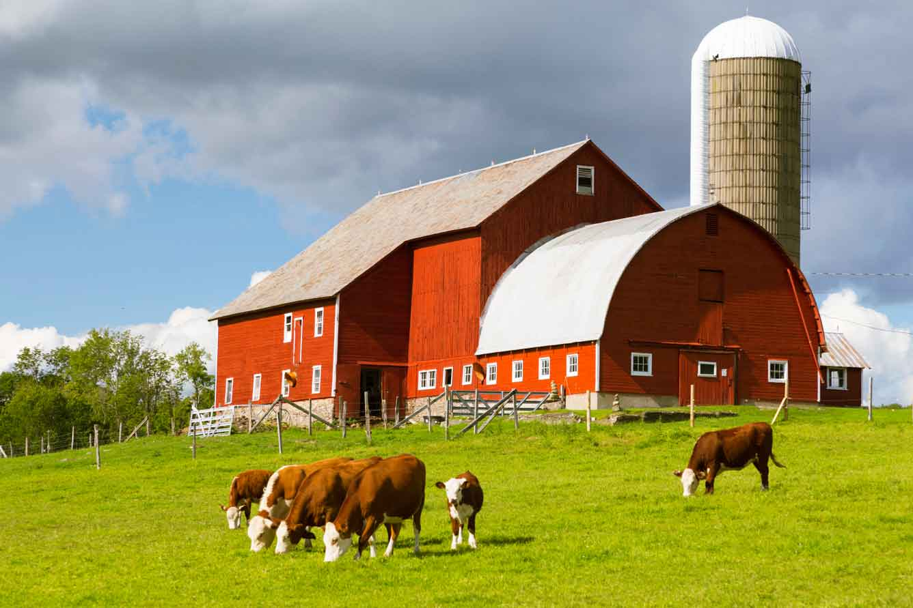

Про нашу ферму
Наше завдання — надати вам найсвіжіші та найчистіші продукти, вирощені з любов'ю та турботою про природу. Ми використовуємо лише органічні методи, без хімікатів та пестицидів.
Наші поля розташовані далеко від промислових зон, що гарантує високу якість та екологічність нашої продукції.
